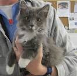

Somos una fundacion Formada el 02 de febrero del 2016 hubicada en la ciudad de cali, sin animo de lucro con un proyecto de vida de:
Crear conciensia social a la humanidad sobre el cuidado de las mascotas
Evitar al maximo la reproduccion de animales callejeeros por diferentes campañas que tenemos actualmente, Como la esterlizacion en diferentes partes de la ciudad y del pais.
Proteger y defender a los animales maltratados y abandonados, Brindando un hogar de paso,
En el que encuentra cariño,alimento, atencion y lo mas importante amor y amistad esta labor
la llevamos acabo en nuestra sede.
Mision de Patitas de Corazon
Somos una Fundacion Sin animo de lucro, cuya mision es crear consiencia social en la comunidad.
sobre tenencia responsable de mascotas, y evitar la discriminacion de animales callegeros en pro del bienestar del animal y de las personas.
Objetivos de Patitas de Corazon
Promover y desarrollar proyectos en actividades con los animales callegeros.
Difundir por todos los medios posibles que los animales tienen derecho a la vida, al buen trato y a permanecer en su habitat apropiado
Hacer que los seres humanos sepan y cumplan las leyes de proteccion animal
